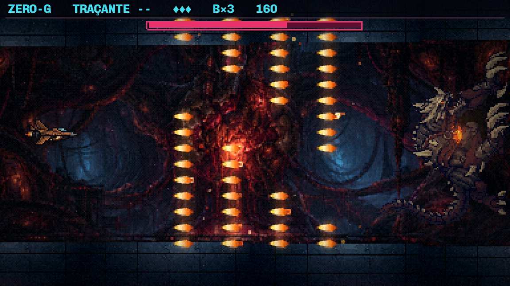
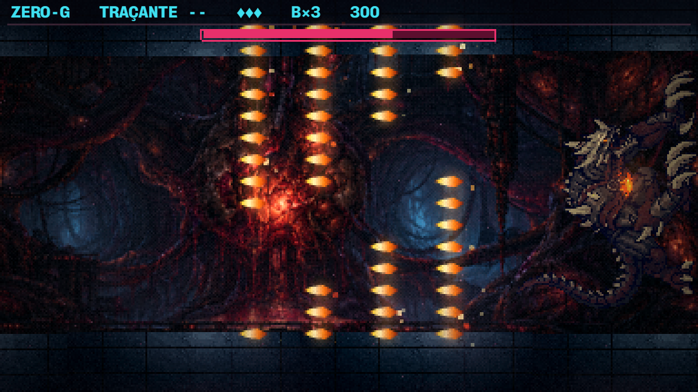
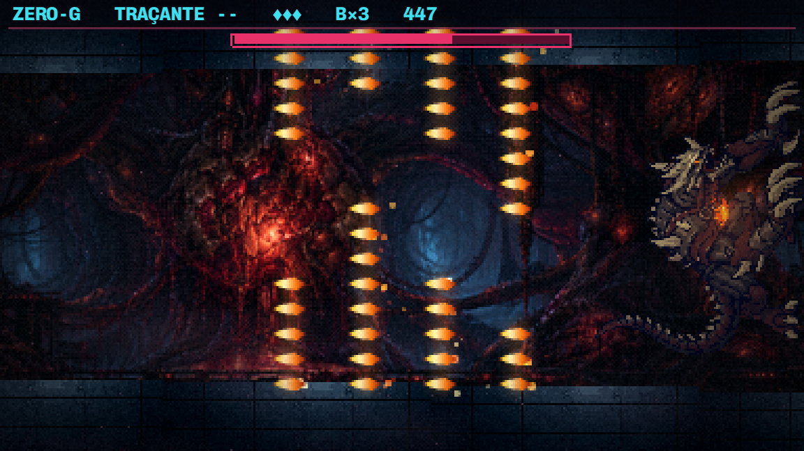
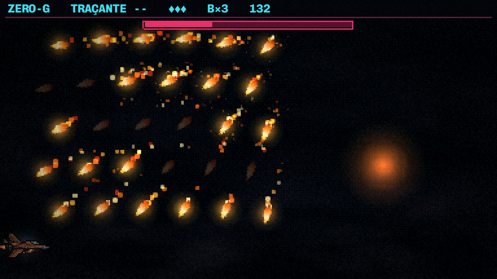
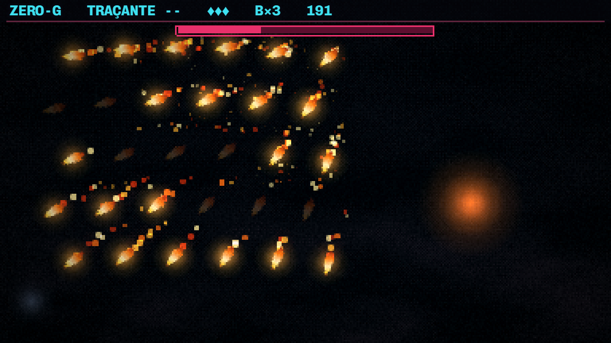

25/11. Planos: plans/2026-11-25-besta-passo11-parede-lenta.md e -passo12-brasas-apagadas.md. Aprovados por ele ("ok para a spec", "as brasas, ok", "siga"). Fotos tiradas no jogo, no tamanho dele ×3.
Ele: "precisamos tirar um dos ataques no ar, não faz sentido ter. Então escolha o melhor momento para isso, ou faça a besta atacar o meio". Os dois golpes de canto saíram (os dois batiam no ar). Na meia volta ela desce até o meio da parede da direita, golpeia a sala e a laje sai dela coluna por coluna. O coração desacelera: as lascas pulsam no batimento lento, e o batimento pesado toca a cada 1,6 s.



Medido no jogo (_besta-parede.mjs): nos três corredores, a nave que segue o tubo a ≤ 110 px/s leva 0 toques; a que fica parada leva a laje; nenhum golpe de canto na rota; a laje sai pela esquerda antes do rasgo.
Ele: "nessa salva de lava, alguns vão se apagar, assim o jogador consegue passar nos que tiverem apagados sem tomar dano". No aperto, uma rota de lascas se apaga: metal escuro e frio, sem dano, sem luz, sem rastro. Os rastros de fogo congelados em volta da rota também somem (eram eles que fechavam a passagem na foto do primeiro teste). Na retomada, as apagadas se desfazem.


Medido no jogo (_besta-coracao.mjs, nos corpos de verdade): em cada rota, a caixa da nave passa com 14–17 px de folga das acesas; nenhuma apagada tem corpo; no bolso, nada toca a nave até 1,2 s depois da retomada.
Ele: "pode deixar que ele tome o dano caso o jogador saque o esquema, mas pode ser um dano reduzido". Enquanto as luzes estão acesas, o core dela está na luz verdadeira (também quando ela desliza pelo teto) e leva metade do dano. As brasas falsas não levam nada. Medido: um tiro de 4 na luz verdadeira tira 2.
| O quê | Onde |
|---|---|
| A parede lenta: o corredor dá para seguir? A espera dela na parede (~6,8 s) está longa? | ?fase=besta2 |
| As brasas apagadas: a rota se lê de imediato? Os 3,0 s de congelamento bastam? | ?fase=besta3 |
| A luz verdadeira com meio dano: vale a pena atirar nela? | ?fase=besta3 |